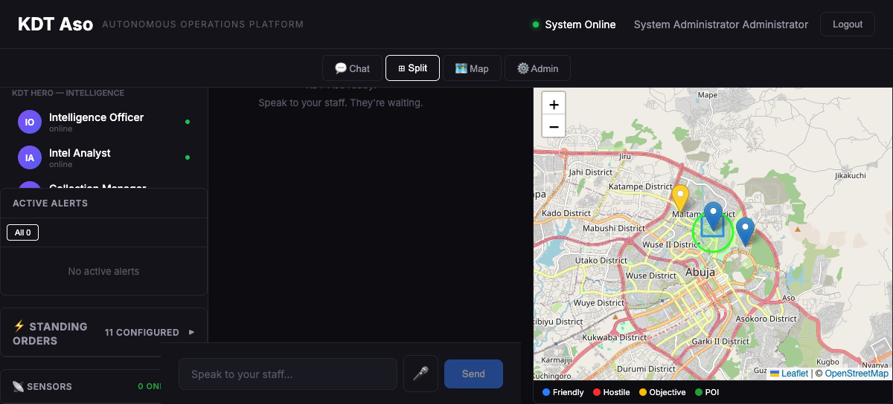
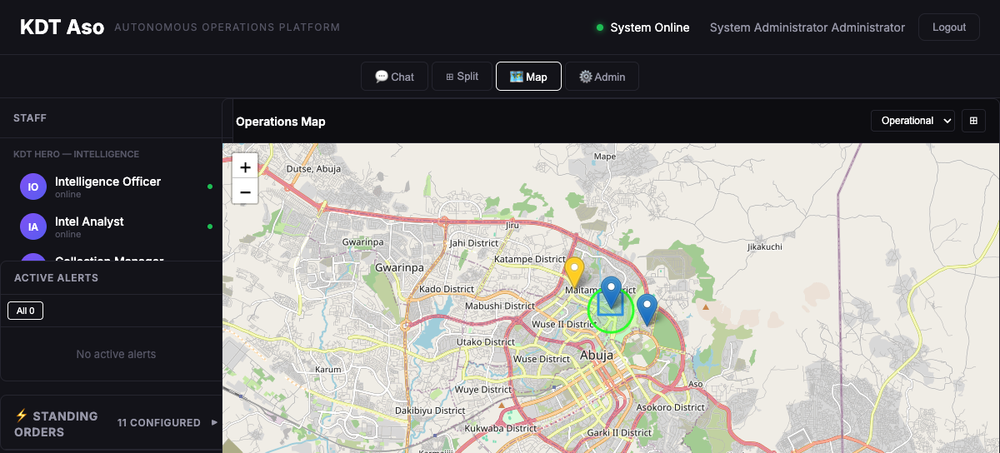
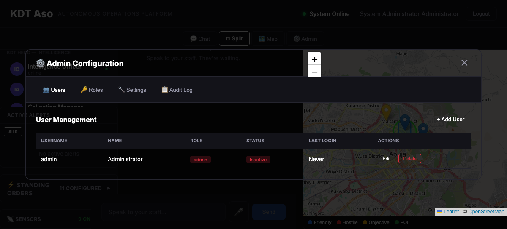
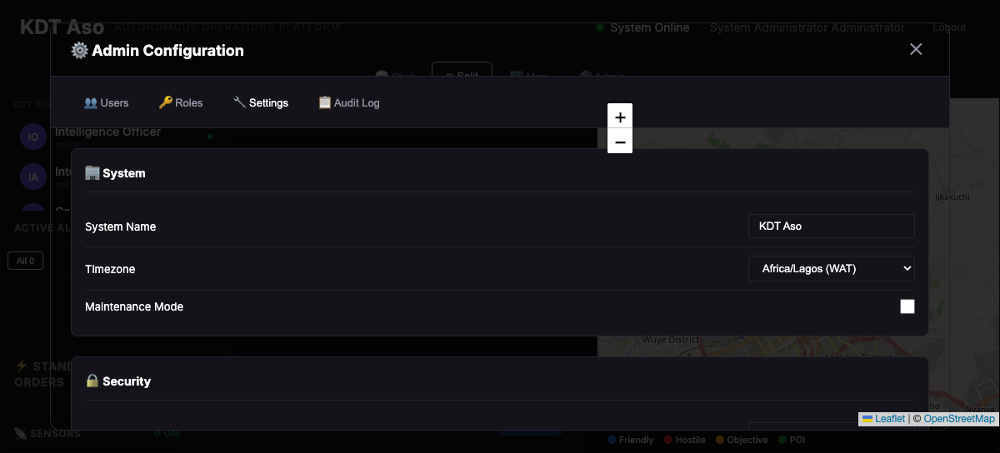
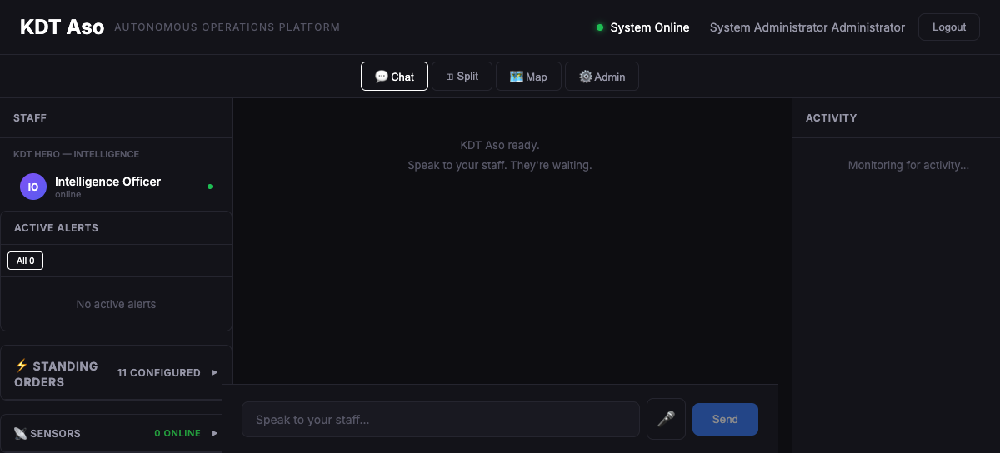
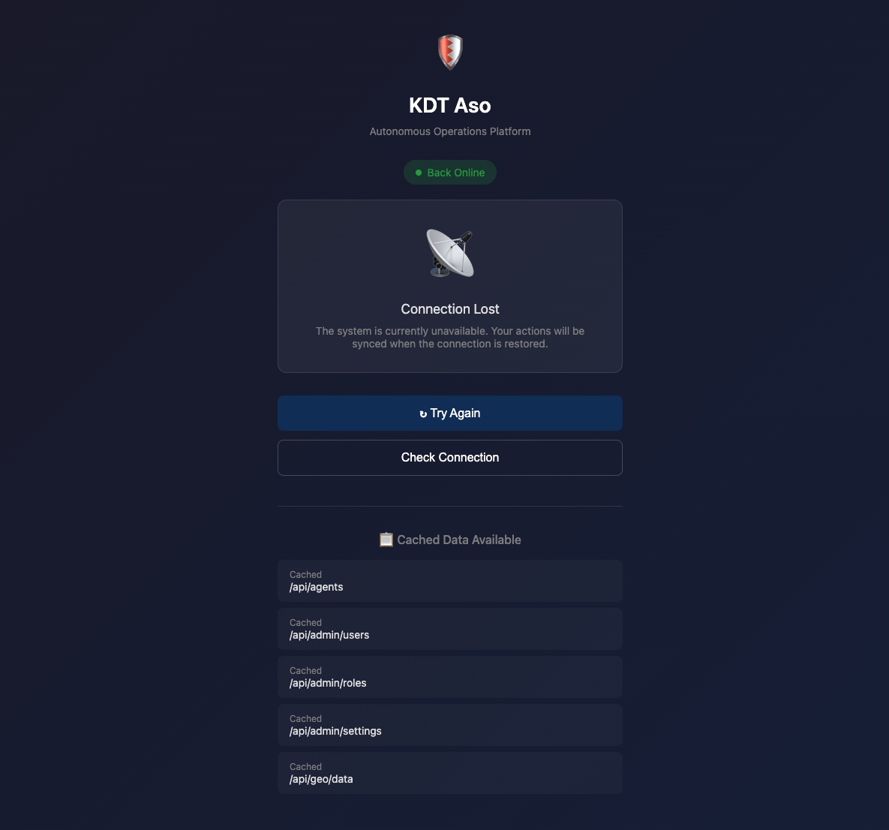

🛡️
KDT Aso
Autonomous Operations Platform
Knight Division Tactical
Feature Documentation — February 2026
Platform Overview
KDT Aso is the central command and control platform for Knight Division Tactical operations. It provides real-time situational awareness, AI-powered staff assistance, secure communications, and comprehensive operational management.
📋 Features
- 1. Authentication & Security
- 2. Voice Interface
- 3. Map/GIS Display
- 4. Standing Orders
- 5. Alert System
- 6. Sensor Integrations
- 7. Deployment Packaging
- 8. Admin Configuration Panel
- 9. Nigerian Languages (7)
- 10. Test Suite
- 11. Persistent Memory
- 12. Mobile PWA
- 13. Document Storage
- 14. Offline Mode
- 15. Backup System
- 16. End-to-End Encryption
Main Dashboard

Split view showing AI staff, alerts, standing orders, chat, and operations map
The main dashboard provides a unified view of all operational data. The split view combines chat with the operations map, while the sidebar shows AI staff status, active alerts, standing orders, and sensor status.
Core Features
1. Authentication & Security
- JWT-based authentication with secure sessions
- Role-based access control (RBAC)
- Protected API routes with middleware
- Session management with HTTP-only cookies
2. Voice Interface
- Speech-to-text input for hands-free operation
- Text-to-speech responses (ElevenLabs integration)
- Voice commands for common operations
- Real-time transcription
3. Map/GIS Display
- Interactive Leaflet map with OpenStreetMap tiles
- Marker types: Friendly, Hostile, Objective, POI
- Area of operations overlay
- Multiple map layers (Operational, Intelligence, Logistics)
4. Standing Orders
- 11 configurable standing orders
- Time-based triggers (schedules)
- Event-based triggers (conditions)
- Automatic execution by AI agents
Operations Map

Full-screen operations map centered on Abuja with tactical markers
Operational Features
5. Alert System
- Priority levels: Critical, High, Medium, Low
- Real-time WebSocket notifications
- Alert acknowledgment tracking
- Automated escalation rules
6. Sensor Integrations
- Support for multiple sensor types
- RTSP/ONVIF camera integration
- Real-time data streaming
- Sensor status monitoring
7. Deployment Packaging
- Docker containerization
- Docker Compose orchestration
- Production-ready Nginx configuration
- Automated build scripts
8. Admin Configuration Panel
- User management (add, edit, delete)
- Role management with permissions
- System settings configuration
- Audit log viewing
Admin Panel

User management interface with role assignment

System settings including timezone and maintenance mode
Platform Features
9. Nigerian Languages
- English (default)
- Hausa — هَوُسَ
- Yoruba — Èdè Yorùbá
- Igbo — Asụsụ Igbo
- Pidgin English
- Fulfulde
- Kanuri
10. Test Suite
- Jest testing framework
- API endpoint tests
- Authentication flow tests
- Integration tests
11. Persistent Memory
- Agent memory storage and retrieval
- Conversation context preservation
- Operational event logging
- Knowledge base with semantic search
12. Mobile PWA
- Progressive Web App manifest
- Install to home screen
- Push notification support
- Responsive mobile design
Chat Interface

Chat interface with AI staff selection and activity feed
Security & Data Features
13. Document Storage
- Categories: Intel, AAR, Mission, SITREP, Personnel, Asset, SOP
- Full-text search
- Document templates
- Version tracking
14. Offline Mode
- Service worker caching
- Offline fallback page
- Background sync when online
- IndexedDB for offline data
15. Backup System
- Automated scheduled backups
- Compressed tar.gz archives
- Checksum verification
- Selective restore options
16. End-to-End Encryption
- AES-256-GCM encryption
- Secure key management
- Session key generation
- Message signing & verification
Offline Mode

Offline fallback page showing cached data availability
Feature Summary
| # |
Feature |
Status |
Added |
| 1 |
Authentication & Security |
✅ Complete |
Feb 18 |
| 2 |
Voice Interface |
✅ Complete |
Feb 18 |
| 3 |
Map/GIS Display |
✅ Complete |
Feb 18 |
| 4 |
Standing Orders |
✅ Complete |
Feb 18 |
| 5 |
Alert System |
✅ Complete |
Feb 19 |
| 6 |
Sensor Integrations |
✅ Complete |
Feb 19 |
| 7 |
Deployment Packaging |
✅ Complete |
Feb 20 |
| 8 |
Admin Config Panel |
✅ Complete |
Feb 20 |
| 9 |
Nigerian Languages (7) |
✅ Complete |
Feb 20 |
| 10 |
Test Suite |
✅ Complete |
Feb 20 |
| 11 |
Persistent Memory |
✅ Complete |
Feb 20 |
| 12 |
Mobile PWA |
✅ Complete |
Feb 20 |
| 13 |
Document Storage |
✅ Complete |
Feb 20 |
| 14 |
Offline Mode |
✅ Complete |
Feb 20 |
| 15 |
Backup System |
✅ Complete |
Feb 20 |
| 16 |
End-to-End Encryption |
✅ Complete |
Feb 20 |